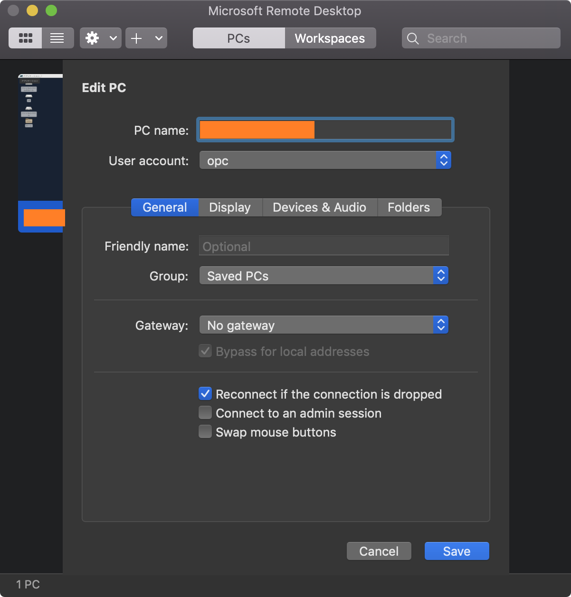
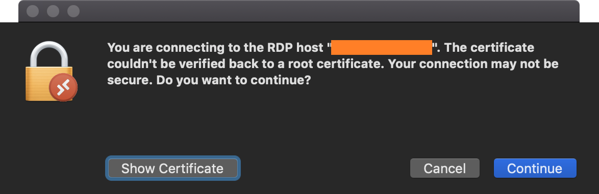
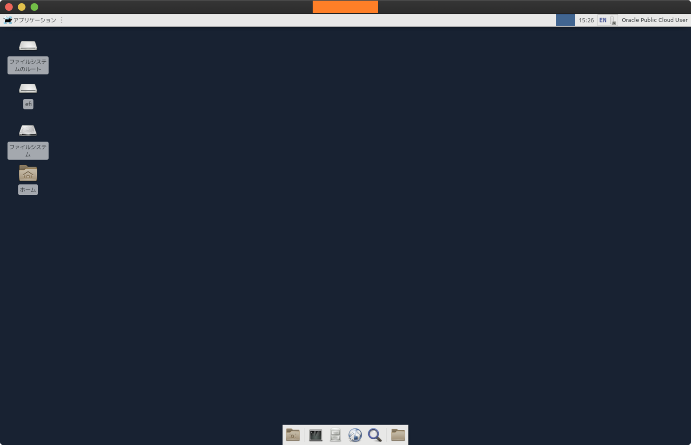
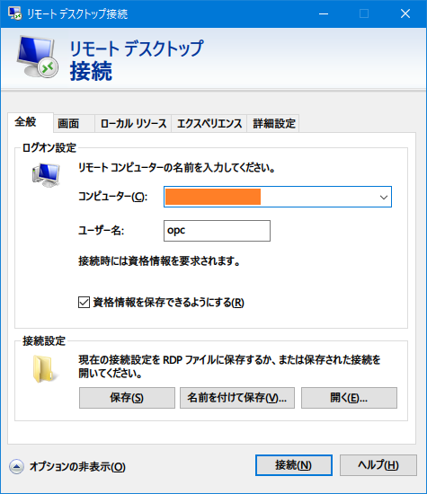
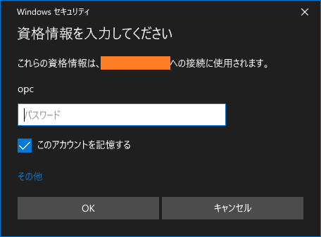
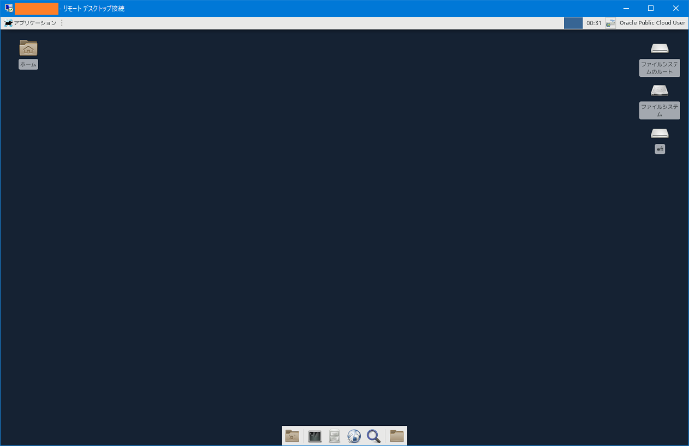

OCI Always Free Instance に Xfce をインストールして GUI 化する
OCI の Always Free な Compute Instance に Xfce をインストールし、GUI 環境を作る。ベースとなる OS は Oracle Linux 7。
ほぼ以下の記事を参考に作業した。
目次
- Compute Instance での作業
- MacOS から RDP 接続する
- Windows から RDP 接続する
- ブラウザをインストールする
- タスクマネージャ xfce4-taskmanager を入れる
- 以上
Compute Instance での作業
順にコマンドだけ掲載する。
# Xfce をインストールする
$ sudo yum groupinstall -y 'X Window System'
$ sudo yum groupinstall -y Xfce
# XRDP をインストールする
$ sudo yum -y install xrdp
$ sudo systemctl enable xrdp
$ sudo systemctl start xrdp
# 日本語フォントをインストールする
$ sudo yum install -y vlgothic-* ipa-gothic-fonts ipa-mincho-fonts ipa-pgothic-fonts ipa-pmincho-fonts
# 日本語入力メソッドをインストールする
$ sudo yum install -y ibus-kkc
# ロケールを日本語に変更する
$ sudo localectl set-locale LANG=ja_JP.UTF-8
# XRDP 接続時に Xfce セッションが起動するようにする
$ cat > '/home/opc/.Xclients' << EOL
#!/bin/bash
export LANG='ja_JP.UTF-8'
export XMODIFIERS='@im=ibus'
export XMODIFIER='@im=ibus'
export GTK_IM_MODULE='ibus'
export QT_IM_MODULE='ibus'
export DefaultIMModule='ibus'
ibus-daemon -drx
exec xfce4-session
EOL
# ファイルに権限を付与する
$ chmod +x '/home/opc/.Xclients'
# opc ユーザにパスワードを設定する (XRDP 用)
$ passwd opc
XRDP を使用して接続するので、Security List で 3389 番ポートへのアクセスを許可しておく。
VM 側の準備ができたら、クライアント PC から接続してみる。
MacOS から RDP 接続する
MacOS の場合は AppStore より「Microsoft Remote Desktop 10」をダウンロードし、以下のように設定する。
- Hostname : OCI VM の Public IP
- User Account : 新規作成し「opc」、先程指定したパスワードを入力する

接続時、次のような警告が出るが、構わず進む。

コレで接続できる。

Windows から RDP 接続する
Windows の場合は、標準で入っている「リモートデスクトップ接続」を利用する。

初回接続時にパスワードを入力する。

以下のとおり。

ブラウザをインストールする
このままだとウェブブラウザがないので、デスクトップから「ターミナル」を開き、次のように叩いていく。
# Firefox はデフォルトで入れられる
$ sudo yum install -y firefox
# Chrome は次のようにリポジトリを追加する
$ sudo vi /etc/yum.repos.d/google.chrome.repo
/etc/yum.repos.d/google.chrome.repo
[google-chrome]
name=google-chrome
baseurl=http://dl.google.com/linux/chrome/rpm/stable/$basearch
enabled=1
gpgcheck=1
gpgkey=https://dl-ssl.google.com/linux/linux_signing_key.pub
$ sudo yum update -y
$ sudo yum install -y google-chrome-stable
こうすると「ウェブブラウザー」のアイコンから Firefox と Chrome (表記は Chromium) が起動できるようになる。
タスクマネージャ xfce4-taskmanager を入れる
ついでにタスクマネージャも入れておく。ターミナルで以下のようにインストールする。
$ sudo yum install -y xfce4-taskmanager
左上の「アプリケーション」 → システム → タスクマネージャー が追加される。
Chrome なんかのブラウザを開くと、CPU 使用率が 4・50% くらい跳ね上がり、もっさりしすぎて使い物にならない。Windows 95 マシンに Windows Me を入れて頑張っていた頃のようだ…。笑
以上
Always Free インスタンスだとやはりだいぶモッサリするが、出先でとりあえず GUI 環境が欲しくなった時に使える…かも…？